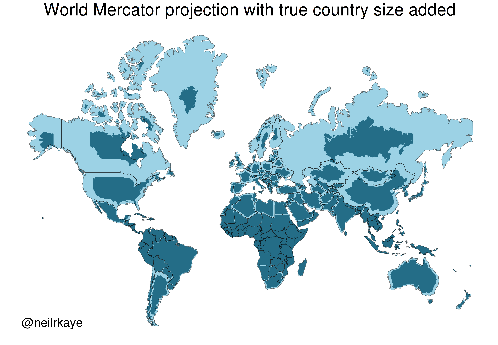

6 Digital mapping 1
Overview
In this part of the course, we’ll learn how to create data maps. By data maps, I mean maps in which geographic elements, such as points, lines, and polygons, which are mapped to external data, for instance cultural or political data. These kinds of maps have become very familiar and widely used in digital history, data journalism and infographics in recent years.
Maps are useful because some data or information has inherently spatial aspects - where the data is from is as important as what. We might want to understand geographic patterns of a phenomenon, for instance how language is used in different regions, or the demographic and economic patterns of particular places, and so forth.
On benefit of a map is that they can be useful cognitive shortcuts. Because we all have models of maps in our head already (think about how you know certain pieces of information about the borders of the provinces or positions of towns in your home country), we can often grasp very quickly lots of information. If you know the rough positions of the towns and provinces of the Netherlands, for instance, you will probably be able to understand some data about them more quickly than if the same information was presented to you in the form of a list or table.
Data maps also help us to see patterns which are specifically geographic in nature - we might see, for example, that a certain data point is more common on coasts, or in particular regions, or notice differences between the centre and periphery.
Creating digital maps
In the maps lecture given by Martijn Storms, we saw maps which had mostly been created by hand. Digital mapping has its own set of techniques, as there are different methods by which we can represent geographic and physical features of the ‘real’ world as computer code.
The two most common formats for doing this are called raster maps and vector maps.A raster map represents the physical elements as individual pixels. This is commonly used when we digitise a physical map - each pixel on a map will be shaded and coloured differently, and this shade will mean something. Another example of a raster map is an elevation map. Each pixel is colored by the elevation of that point, i.e.
This kind of map can be read by a computer, to calculate things like travel times, or to understand ecological differences, and so forth.
The other kind of map is called a vector map. A vector map represents geographic elements as a series of numerical values. These geographic elements are generally points, lines, or polygons. For instance, a point is represented by a set of two coordinates, giving the latitude and longitude on earth. A line would be represented by a series of numbers, which when joined together make up a line on a map.
The main difference between the two is that vector maps contain shapes which can be specifically read by computer code. Unlike a raster map, with vector data, we can outline the shape of a river or road, or the outline of a province or other political border. This makes vector data particularly useful for creating data visualisations.
Mapping Aesthetics
As with all data visualisation, the process involves mapping aesthetics to values. The key difference between maps and other data visualisations is that position is usually based on geographic position, i.e. areal physical location on earth. The most common kinds of data maps you’ll find will use position, size, color, and shape to draw points on a map, or will use position and color (and perhaps patterns) to fill in polygons.
Which is used is usually dependent on the specific kind of geographic data you have. Points ‘point’ to specific, exact places on a map, for instance a town, village, or even an exact address. Polygons are widely used when the data we have relates to political or cultural regions and borders.
Points Map
This first graphic is an example of simply using position to create a data visualisation. Each covid death has been drawn as a single tiny black point, and through the placement of millions of these points, we can see precisely where the death toll from Covid was highest.
Just like the earlier data visualisations we made on this course, we can also map further aesthetics as well as position to the data. In this next example from the New York Times, data on weather records was mapped. The authors drew points using both colour (a categorical colour scale, either red for heat or blue for cold records) and size (the amount by which the previous record was broken) to communicate the areas where temperature records had been most extreme in that year.
Choropleth maps
A classic use of mapping data to polygons are election maps. This is because election results are usually counted by region, municipality, or other political border. In this example from the 2011 election in the Netherlands, each municipality is represented by a polygon. Each polygon is then coloured by the winning party. A discrete colour scale is used, because this is categorical data (each region has exactly one winning party).
A map where colour is used to present statistical data through polygon shapes is known as a choropleth map. These maps tend to be useful when we have data which is not related to a single point (such as a town or city), but is connected to regions, such as countries, municipalities and so forth.
However, there are some issues we should be aware of making choropleth maps. In the example of the election map above, about half of the map is coloured blue. This might lead us to think that the VVD party received over half of the total votes. But while they were the largest party, in fact they won 112 seats out of a total of 566 - about one-fifth of the votes.
This is of course because this map hides the fact that elections are related to population rather than land area. The VVD party are bigger in rural areas which tend to be sparsely populated. Generally, when creating data visualizations, it is best practice that each pixel or piece of ‘ink’ on the page represents the same amount of numerical value. This is not the case if we use geographic data like this. In this case, the numerical unit is a vote, and some votes are represented by less area than others, because of population density.
One fix for this is to create a cartogram map. This attempts to distort a map so that the area better reflects the data. This example distorts the shapes of the countries of the European Union so that the area of each is related to the amount of the budget they either contribute or receive (between 2007 and 2013, and per capita).
7 Creating maps in R
In this context, ‘from scratch’ means that on this course we will learn how to create both the underlying map ‘canvas’, as well as the data points or polygons to go on top of it.
This week, we’ll practise making the ‘basemaps’ onto which further data will be drawn later. We’ll also learn how to visualise some additional data as choropleth maps.
It’s worth understanding a little of what happens when we want to make a map of shapes.
When we want to create maps with computers, using a Geographic Information System, or GIS, the computer needs to know what to map. Essentially, it needs some data which tell it how to draw shapes. This is usually in the form of a list of coordinates, which make up a polygon. Each individual polygon (or set of polygons, to show separate islands and so forth) might represent a country, region, or municipality, such as this one of these of the country borders of Spain and the Netherlands:
Because this is vector data, we can read it into R and make changes to it, for example adjusting the ‘fill’ color, and changing the color and thickness of the border lines.
Coordinate Reference System (CRS)
These polygons are not just regular shapes, because they contain geographic information, which consists of information relating to position on the earth’s surface. In the previous example, we need to know how the two shapes relate to each other on the earth, and if we wanted to add more data, we would need to be sure it was using the same system.
This position is usually expressed as latitude and longitude coordinates. A set of latitude/longitude coordinates relate to a single position. For example, the coordinates 52.160114, 4.497010 refer to a point which is 52.160114 degrees North of the Equator, and 4.49 degrees East of the prime meridian (Greenwich in London).
There is one further complication with maps. Because they are not a flat surface but a sphere, and, furthermore, that sphere is not perfect but has a slightly different set of distortions depending on where you are in the world.
To account for this, any geographic object also needs a coordinate reference system or CRS. This tells the map maker or map-making software how to interpret the coordinates on a sphere. It can also include information on the projection to be used. We won’t need to worry too much about the specifics of this when creating our own maps, except to know that if we want to combine multiple geographic sources, they must use the same CRS.
Projections
A second complication arises when we try to turn a 3D object (the earth) into a flat, two-dimensional one (a map). In order to do this, mapmakers have to decide how to do it, using a technique called a projection, which projects a 3D object onto a 2D plane.
There are lots of ways of doing this, and they can be controversial. Essentially, when making projections, mapmakers have to balance accurate shapes with accurate areas.
The most famous and widely-used projection is Mercator. This preserves the shape of the world quite well, but it distorts the areas quite a bit, depending on how far or close they are to the equator. Consequently, this projection makes countries in the global south much smaller than they are in reality. This is a good example of how the decisions on how maps are made, and who made them (in this case, western Europeans), can have a huge effect on the perception on places.

Working with maps: the sf package
To build a map, we need to import special data into R. To do this we’ll use a package called sf. sf stands for simple features. It is a data format specially made for geographic data. Essentially, a simple features object looks like the dataframes (the rows and columns) we have been working with all along, except with one new column, called geometry. Each row of the data can be considered a ‘feature’, meaning a single point, line, or polygon.
So each row contains a single feature. Usually, these will have additional information about them. For example, one ‘feature’ might be a polygon shape for a single country. This might have a row of information with the country name, ISO code, even population and so forth.
The special ‘geometry’ column is what makes it geographic information. This contains the geographic information for that feature. In the case of a polygon shape for a country, it will contain a list of the points which, joined together, make up the shape of that polygon. A points feature will contain a single set of geographic coordinates, and a line will contain a list of points, but it won’t be joined-up, like a polygon. Each sf object will only contain one type of feature.
As well as this geometry column, each sf object will have a further piece of information attached to it - a CRS or coordinate reference system. Often, if you download a map file from the internet, it may already have one of these embedded. If you make your own set of features (a set of points, for example), then you will need to add a CRS yourself. In order to add maps together (for example, to have a baselayer of polygons and a layer of points over that), they’ll both need to have the same CRS. We’ll learn how to add this later.
The good news about sf objects is that they behave just like dataframes. This means that we can apply all the techniques and code we learned over the past few weeks to these objects. For example, if you have a sf object which is a list of countries and you want to map only a few of them, you could do this with filter(). Or, you can use group_by() and summarise() if you have a group of points and you want to group them all together.
sf also has many additional features to to complicated calculations and transformations of geographic data. If you are interested in learning more, I highly recommend reading all or part of Geocomputation with R. For now, we will stick with simple calculations, based on the kinds of things we have already been learning, just with geographic data.
Basemaps
To begin most maps, you’ll need a basemap. This is often going to be a simple map of the world, allowing readers to properly orientate themselves - so they’re not looking just at a group of points or polygons floating in space, for example.
In R, the easiest way to create a basemap is using a package and a database called RNaturalEarth. RNaturalEarth allows you to connect to a database containing many different shapefiles, that is, datasets containing shape information. This includes many different borders, such as state, country, municipality etc. Depending on your needs, it may be helpful to have some of these.
In other cases, you’ll just want a very simple map of the world. This is particularly the case with historical maps, because boundaries change frequently. It may not make sense to have a border of modern Germany if your historical data comes from the eighteenth century, for example. In this case, you’ll want to map coastlines instead of countries, or, you can colour your basemap so that the internal borders are the same as the fill color.
As well as basic shapes of countries, you can download rivers, lakes, and other physical features.
To use sf and Rnaturalearth, you’ll first need to install them, if you haven’t already. It should already be working in your Posit cloud instance, but if not, you can ‘uncomment’ the following code by removing the # from the beginning, and then run the cell:
# install.packages('rnaturalearth')
# install.packages('sf')Next, you would load the library:
library(rnaturalearth)
library(sf)
sf_use_s2(FALSE) # this last line is a fix for some problems we might encounter later...Spherical geometry (s2) switched offThe package contains three ‘standard’ maps which can be used.
The first is a dataset of country borders. to load this, you’ll need to use the function ne_countries(), as well as specify a few more options:
scale = , which will determine how detailed the borders should be, one of small, medium, or large.
returnclass =, which will specify the type of data to be downloaded from the database. In all cases, we’ll use returnclass = 'sf' (note the quotation marks around sf).
Optionally, you can specify that the function return a single country or list of countries. This is done using the syntax country = 'Netherlands' or country = c('Netherlands', 'Spain').
The following cell will download a dataset in sf format, of all world countries:
worldmap = ne_countries(scale = 'medium', returnclass = 'sf')This will download a map of just Germany:
germanymap = ne_countries(scale = 'medium', returnclass = 'sf', country = 'Germany')Or a map of Germany and the Netherlands:
de_nl_map = ne_countries(scale = 'medium', returnclass = 'sf', country = c('Germany', 'Netherlands'))The next useful map type is coastlines. This downloads a simple map of the world’s coastlines, useful if you want a map without any political borders. This is done with the function ne_coastline. In this case, we should specify the scale and returnclass:
worldcoastlines = ne_coastline(scale = 'medium', returnclass = 'sf')Once this has downloaded, open the new ‘worldmap’ object in your environment to take a look at it. You’ll see it is a dataframe with a large number of columns, with one row for each country. If you go to the very last column, you’ll see it has a ‘geometry’ column, where it stores the shapes for each country. But as well as this basic information on the shapes, the data contains continent and even some economic and demographic information.
Using filter just as we have in previous weeks, you could easily filter this map to only include a certain continent or certain development index, or perhaps only countries with a population greater or smaller than a specific number. Here are a few examples:
Create a map of Europe:
europemap = worldmap %>%
filter(continent == 'Europe')Create a map of counties with a population of less than 5 million:
small_countries = worldmap %>%
filter(pop_est < 5000000)Visualising with ggplot
Plotting and visualising these maps will also be done with a package you are familiar with: ggplot2.
To draw maps instead of regular data, it just requires some small changes. To draw a map we’ll use a function starting with geom_, as we did with geom_col, geom_point and so forth.
The geom for maps is called geom_sf() and it works in the exact same way as the others, except it knows to treat the data as a map.
Using geom_sf on its own on an sf object will take that object and plot it as a simple two-dimensional map. Following this, you can use the rest of the ggplot syntax you learned to modify the maps. For example, you can change the fill and color of the shapes, and the size of points, using fill = , color = and size =. These can be mapped to specific parts of the data if you include them within aes(), as before.
You can also use the same code as before to change the scales, add annotations, and set limits to the plot.
To create a basic map from an sf object simply use ggplot() as before, but add + geom_sf() to your map:
ggplot() + geom_sf(data = worldmap) 
You can use filter to limit the map to a single continent or region.
worldmap %>%
filter(continent == 'Europe') %>%
ggplot() + geom_sf() worldmap %>%
filter(sovereignt == 'Netherlands') %>%
ggplot() + geom_sf() Setting limits
Using filter might not always give satisfactory results. In the above case, it includes places which are politically at least part Europe, such as overseas territories and the entirety of Russia. In the case of the Netherlands, this makes the main part of the map very small and difficult to see(if we wanted to include this place, it may be best to add an inset, but that will have to be left to another lesson).
If our data was more specifically about western Europe, we might want to pick a custom ‘square’ of the map to show. We can do this using the code + coord_sf(). This should be added after the rest of the map code.
Within coord_sf, we’ll set the start and end limits for the x and y axis (or longitude and latitude coordinates), using xlim and ylim, like this:
worldmap %>%
ggplot() +
geom_sf() +
coord_sf(xlim = c(-10, 25), ylim = c(38, 60))A map can consist of many layers of geographic information stacked on top of each other.
As well as the basic countries and coastline maps, it is also possible to download lots of other specific geographic data from RNaturalearth, using a function ne_download. To use this, you’ll need to specify the category and type of the map, as well as the scale and returnclass as before. The full list of categories and types is available on this page, towards the end.
The following example will download the ‘rivers_lake_centerlines’ data from the ‘physical’ category of maps:
rivers = rnaturalearth::ne_download(scale = 'medium',category = 'physical', type = 'rivers_lake_centerlines', returnclass = 'sf')We can add this river data using a new layer, with another geom_sf and a +.
One thing to note is that you always need to put the coord_sf() after your last geom_sf, otherwise it will ignore it and give the full map:
worldmap %>%
ggplot() + geom_sf() +
geom_sf(data = rivers) +
coord_sf(xlim = c(-10, 25), ylim = c(38, 60))We can also change aspects of the map such as the fill of the shapes, and the colour of the outline. As with before, this is done using color = and fill =. To change all of the geographic data of a layer to a single color, simply type it within the geom_sf . If it is to be mapped to specific data, it should be enclosed within aes()
worldmap %>%
ggplot() + geom_sf(color = 'black', fill = 'lightgreen') +
geom_sf(data = rivers, color = 'blue') +
coord_sf(xlim = c(-10, 25), ylim = c(38, 60))Geographic data
These maps are, essentially, just reflections of physical geography. To make a map into a data visualisation, we need to actually map some additional data on top of this, to specific aesthetics such as size and color. As mentioned above, the most common ways to do this are either choropleth or points maps. We’ll work with the latter next week.
The country shapefile downloaded from RnaturalEarth has some basic data attached to it, which we can use to map. If you look at the worldmap object in your environment, you can see how the data has been stored in columns.
In your own maps, you probably won’t have data directly attached to the polygon object.
However the Rnaturalearth data is useful to practise the syntax of map data visualisations.
In the RNaturalEarth data, a population count for each country is stored in the column pop_est. We can use this data field to color the polygons, just as we have with data in earlier classes.
As before, add %>% ggplot() and geom_sf() to the plot. Next, use aes() and then specify fill = pop_est, within the aes().
worldmap %>% ggplot() + geom_sf(aes(fill =pop_est))RNaturalEarth also includes categorical information. The object also includes a column economy, which assigns each country a discrete label depending on the economy type. Let’s try mapping this:
worldmap %>% ggplot() + geom_sf(aes(fill =economy)) Adding geographic data
As mentioned, usually you will want to bring external data to your maps rather than use this basic information. To do this, we’ll go back to another function we learned earlier in the course - joins.
As an example, take this dataset containing a count of the refugees which arrived in the US in 2015, by place of origin. You can load this with the code below:
refugees_2015_us = read_csv('refugee_us_2015.csv')Rows: 113 Columns: 2
── Column specification ────────────────────────────────────────────────────────
Delimiter: ","
chr (1): origin
dbl (1): n
ℹ Use `spec()` to retrieve the full column specification for this data.
ℹ Specify the column types or set `show_col_types = FALSE` to quiet this message.If you look at this object, you’ll see it contains two columns: the origin country, in a column called ‘origin’, and a count of the number of arrivals, in a column called ‘n’.
Using left_join , we can merge this with the worldmap data, so that it contains an additional column, n, with the refugee arrivals information. To do this, we need to specify that the origin column from the arrivals data is matched with the name column in the worldmap data:
worldmap_with_refugee = worldmap %>%
left_join(refugees_2015_us, by = c('name' = 'origin'))Note that because of the complexities of country names, it may not match all up correctly.
Lastly, we can map this data, specifying that ggplot should map the new n columnto the fill aesthetic:
worldmap_with_refugee %>%
ggplot() + geom_sf(aes(fill = n))Exercises
Downloading
In each case, make sure you save the map to the environment, by giving each object a name using
<objectname> =Using
rnaturalearth, download a full map of the countries of the world, at a medium scale.Download a new map of a region of your choice, using either
continent,region_un,region_wb, orsubregion.Download a new map using the function
ne_download(). The category should be ‘cultural’, and the type should ‘urban_areas’.
Visualising
Using ggplot, make a basic plot of the region map.
Next, restrict this map to a smaller area, using
coord_sfChange the fill of the polygons to a new color.
Add the urban areas map as a second layer to your regions.
Set the fill of the polygons in the region map to the
pop_estcolumn. Set the urban areas to a new color.Change the fill scale of this map (for example using
scale_fill_viridis_c()
Adding data (harder difficulty!)
The code cell below will download a dataset containing data on all past Nobel prize winners. Run this (or copy and paste into the notebook you’re using) to load it into the environment.
nobel_df = read_csv('https://raw.githubusercontent.com/melaniewalsh/Intro-Cultural-Analytics/master/book/data/nobel-prize-winners/nobel-prize-winners.csv')Warning: One or more parsing issues, call `problems()` on your data frame for details,
e.g.:
dat <- vroom(...)
problems(dat)Rows: 956 Columns: 26
── Column specification ────────────────────────────────────────────────────────
Delimiter: ","
chr (19): name, bornCountry_original, bornCountry_now, bornCity_original, b...
dbl (5): bornLong, bornLat, diedLong, diedLat, year
date (2): born, died
ℹ Use `spec()` to retrieve the full column specification for this data.
ℹ Specify the column types or set `show_col_types = FALSE` to quiet this message.Get a simple count of the number of winners for each country (save it as an object such as
nobel_count_df)Merge this new count dataset with the world map (or region map) you created above, using
left_join.Create a new map which visualises this information. Experiment with
coord_sfandscale_fill_to make the map more readable.
Tough exercises
Create a map which colors countries by the number of female Nobel winners by head of population. To do this you’ll need to use
filter,mutate, along with thepop_estcolumn from the countries map data.Make a visualisation which gives a series of small maps, one for each category of Nobel prize, where each country is colored by the total number of winners. You’ll need to use a function called
facet_wrap(), which will be added to the end of your plot using+. You’ll need to do some independent work to find out the correct syntax for this!
Tougher exercises
The sf package can do some complicated geographic calculations. If you’re interested, you could try out some of the following. In order to do these, you’ll need to run sf_use_s2(FALSE) and make sure the package lwgeom is installed (this should already be done for you in Posit, but bear in mind in case you get errors).
Restrict the worldmap object to only countries which are smaller than 100 million square metres. You’ll need to make use of mutate() and st_area(), and then filter().
By default, st_area will return the answer in units of metres square. If you want to filter using a simple number, you need to ‘force’ R to treat the area as a number using as.numeric()
Create a map containing only Germany and countries which border it. To do this, you’ll need to make object containing only a map of Germany, and then use st_intersection on both the full map and the new Germany map.
Visualise this new map using some of the worldmap data!